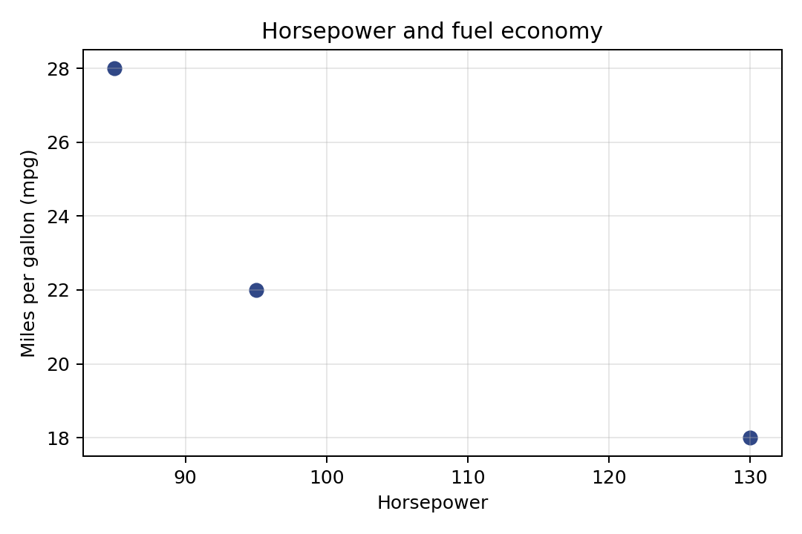

第二章 / 2.3 Python 实验 / 代码 2.3.4-02
画散点、设置坐标并保存
这一块属于连续的 Notebook。请先运行前面的代码块；变量可能依赖前面的定义。全部数据均为教学用虚构数据。
代码 2.3.4-02
逐步读代码
plt.subplots创建图与绘图区；scatter(x,y)按位置配对坐标，color指定颜色，s=50设置点的面积。set_xlabel、set_ylabel和set_title设置轴名及标题；grid(alpha=0.3)画透明度较低的网格，帮助读数。tight_layout调整留白；savefig把同一图保存成PDF及180 dpi的PNG。image_dir / 文件名是在先前创建的目录下定位文件。display(fig)是Jupyter提供的显示接口；plt.close(fig)释放绘图对象，避免积累多张图。关闭对象不会删除已保存图片。
实际运行图形

下载矢量图